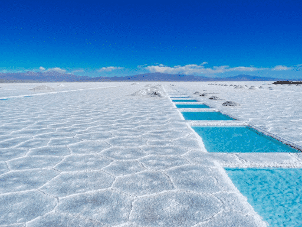
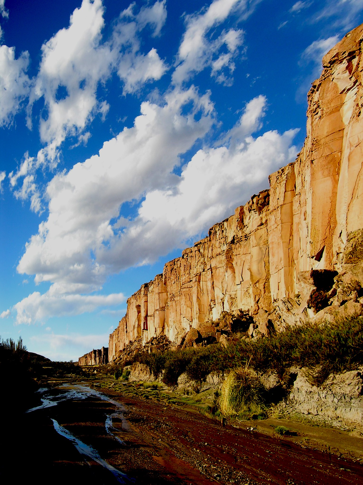

Salinas Grandes
Coordenas del destino:
-23.604812392329, -65.870419942755
Geográficamente las Salinas Grandes se ubican tanto en la Provincia Jujuy como en la Provincia Salta a 3,450 msnm y es el cuarto salar más grande de Sudamérica. Por cuestiones climatológicas y visuales como recurso turístico son más atractivas del lado jujeño, ya que están «más blancas». Históricamente en los primeros comienzos los pagos por trabajos se pagaban con sal de allí la palabra «salario». Los traslados de sal en un comienzo se realizaban en llamas, posteriormente en burros, y actualmente en camionetas y camiones, dependiendo el fin.

Barrancas (Abson Castro Tolay)
Coordenadas del destino:
-22.421462408187, -66.422857046127
También conocida como Abdón Castro Tolay (un maestro que decidió trasladar la escuela desde un paraje cercano hasta el lugar actual del pueblo), es una comunidad fundada en octubre de 1919 y se encuentra dentro del departamento Cochinoca. Es pura historia y tradiciones andinas, pero a través de sus enormes paredones naturales, que conservan pinturas rupestres y petroglifos.

El Moreno
Coordenadas del destino:
-23.853884204952, -65.83085435115
El Moreno pueblo de encanto al pie del Cerro Chañi, testigo de caminos ancestrales y apus venerados por pueblos prehispánicos. Ubicado en el departamento Tumbaya a 3600 m.s.n.m y al pie del Cerro mas alto de la provincia de Jujuy, el Chañi de 5896 metros de altura, nos invita a conocer esta comunidad de encanto particular. de alturas y montaña.